第一部分：强化学习中的核心概念¶
欢迎来到强化学习的介绍部分！我们希望你能了解以下内容：
- 常见的符号表示
- 高层次的理解：关于强化学习算法做什么（我们会尽量避免 如何做 这个话题）
- 算法背后的核心数学知识
总的来说，强化学习是关于智能体以及它们如何通过试错来学习的研究。它确定了通过奖励或惩罚智能体的动作从而使它未来更容易重复或者放弃某一动作的思想。
强化学习能做什么¶
基于强化学习的方法已经在很多地方取得了成功。例如，它被用来教电脑在仿真环境下控制机器人：
以及在现实世界中的机器人：
强化学习因为被用在复杂策略游戏创造出突破性的 AI 中而名声大噪，最著名的要数 围棋 、 Dota 、教电脑 玩Atari游戏 以及训练模拟机器人 听从人类的指令 。
核心概念和术语¶

智能体和环境的循环作用
强化学习的主要角色是 智能体 和 环境,环境是智能体存在和互动的世界。智能体在每一步的交互中，都会获得对于所处环境状态的观察（有可能只是一部分），然后决定下一步要执行的动作。环境会因为智能体对它的动作而改变，也可能自己改变。
智能体也会从环境中感知到 奖励 信号，一个表明当前状态好坏的数字。智能体的目标是最大化累计奖励，也就是 回报。强化学习就是智能体通过学习来完成目标的方法。
为了便于后面的学习，我们介绍一些术语：
- 状态和观察(states and observations)
- 动作空间(action spaces)
- 策略(policies)
- 行动轨迹(trajectories)
- 不同的回报公式(formulations of return)
- 强化学习优化问题(the RL optimization problem)
- 值函数(value functions)
状态和观察¶
一个 状态  是一个关于这个世界状态的完整描述。这个世界除了状态以外没有别的信息。观察
是一个关于这个世界状态的完整描述。这个世界除了状态以外没有别的信息。观察  是对于一个状态的部分描述，可能会漏掉一些信息。
是对于一个状态的部分描述，可能会漏掉一些信息。
在深度强化学习中，我们一般用 实数向量、矩阵或者更高阶的张量（tensor） 表示状态和观察。比如说，视觉上的 观察 可以用RGB矩阵的方式表示其像素值；机器人的 状态 可以通过关节角度和速度来表示。
如果智能体观察到环境的全部状态，我们通常说环境是被 全面观察 的。如果智能体只能观察到一部分，我们称之为 部分观察。
你应该知道
强化学习有时候用这个符号 代表状态 , 有些地方也会写作观察符号 . 尤其是，当智能体在决定采取什么动作的时候，符号上的表示按理动作是基于状态的，但实际上，动作是基于观察的，因为智能体并不能知道状态（只能通过观察了解状态）。
在我们的教程中，我们会按照标准的方式使用这些符号，不过你一般能从上下文中看出来具体表示什么。如果你觉得有些内容不够清楚，请提出issue！我们的目的是教会大家，不是让大家混淆。
动作空间¶
不同的环境有不同的动作。所有有效动作的集合称之为 动作空间。有些环境，比如说 Atari 游戏和围棋，属于 离散动作空间，这种情况下智能体只能采取有限的动作。其他的一些环境，比如智能体在物理世界中控制机器人，属于 连续动作空间。在连续动作空间中，动作是实数向量。
这种区别对于深度强化学习来说，影响深远。有些种类的算法只能直接用在某些案例上，如果需要用在别的地方，可能就需要大量重写代码。
策略¶
策略 是智能体用于决定下一步执行什么行动的规则。可以是确定性的，一般表示为： :
:
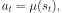
也可以是随机的，一般表示为  :
:
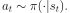
因为策略本质上就是智能体的大脑，所以很多时候“策略”和“智能体”这两个名词经常互换，例如我们会说：“策略的目的是最大化奖励”。
在深度强化学习中，我们处理的是参数化的策略，这些策略的输出，依赖于一系列计算函数，而这些函数又依赖于参数（例如神经网络的权重和误差），所以我们可以通过一些优化算法改变智能体的的行为。
我们经常把这些策略的参数写作  或者 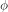 ，然后把它写在策略的下标上来强调两者的联系。
或者 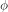 ，然后把它写在策略的下标上来强调两者的联系。
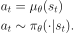
确定性策略¶
例子：确定性策略： 这是一个基于 TensorFlow 在连续动作空间上确定性策略的简单例子：
obs = tf.placeholder(shape=(None, obs_dim), dtype=tf.float32)
net = mlp(obs, hidden_dims=(64,64), activation=tf.tanh)
actions = tf.layers.dense(net, units=act_dim, activation=None)
其中，mlp 是把多个给定大小和激活函数的 密集层 （dense layer）相互堆积在一起的函数。
随机性策略¶
深度强化学习中最常见的两种随机策略是 绝对策略**(Categorical Policies) 和 **对角高斯策略 (Diagonal Gaussian Policies)。
确定 策略适用于离散行动空间，而 高斯 策略一般用在连续行动空间
使用和训练随机策略的时候有两个重要的计算：
- 从策略中采样行动
- 计算特定行为的似然(likelihoods) 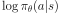.
下面我们介绍一下这两种策略
绝对策略
确定策略就像是一个离散空间的分类器(classifier)。对于分类器和确定策略来说，建立神经网络的方式一模一样：输入是观察，接着是一些卷积、全连接层之类的，至于具体是哪些取决于输入的类型，最后一个线性层给出每个行动的 log 数值(logits)，后面跟一个 softmax 层把 log 数值转换为可能性。
采样 给定每个行动的可能性，TensorFlow之类的框架有内置采样工。具体可查阅 tf.distributions.Categorical 或 tf.multinomial 的文档。
对数似然 ：表示最后一层的可能性  。它是一个有很多值的向量，我们可以把行动当做向量的索引。所以向量的对数似然值
。它是一个有很多值的向量，我们可以把行动当做向量的索引。所以向量的对数似然值  可以通过这样得到：
可以通过这样得到：
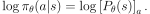
对角高斯策略
多元高斯分布（或者多元正态分布），可以用一个向量 和协方差 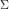 来描述。对角高斯分布就是协方差矩阵只有对角线上有值的特殊情况，所以我们可以用一个向量来表示它。
对角高斯策略总会有一个神经网络，表示观察到行动的映射。其中有两种协方差矩阵的经典表示方式：
第一种 ： 有一个单独的关于对数标准差的向量： 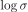，它不是关于状态的函数， 而是单独的参数（我们这个项目里，VPG, TRPO 和 PPO 都是用这种方式实现的）。
第二种 ：有一个神经网络，从状态映射到对数标准差 。这种方式可能会均值网络共享某些层的参数。
要注意这两种情况下我们都没有直接计算标准差而是对数标准差。这是因为对数标准差能够接受 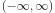 的任何值，而标准差必须要求参数非负。要知道，限制条件越少，训练就越简单。而标准差可以通过取幂快速从对数标准差中计算得到，所以这种表示方法也不会丢失信息。
采样 ：给定平均行动 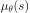 和 标准差  ，以及一个服从球形高斯分布的噪声向量 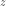，行为的样本可以这样计算：
，以及一个服从球形高斯分布的噪声向量 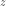，行为的样本可以这样计算：
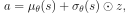
这里 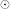 表示两个向量按元素乘。标准框架都有内置噪声向量实现，例如 tf.random_normal 。你也可以直接用 tf.distributions.Normal 以均值和标准差的方式采样。
对数似然 一个 k 维行动 基于均值为 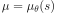，标准差为 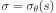 的对角高斯的对数似然：
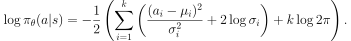
运动轨迹¶
运动轨迹  指的是状态和行动的序列。
指的是状态和行动的序列。

第一个状态  ，是从 开始状态分布 中随机采样的，有时候表示为
，是从 开始状态分布 中随机采样的，有时候表示为  :
:
转态转换（从某一状态时间  ,
,  到另一状态时间 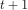 ,
到另一状态时间 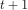 ,  会发生什么），是由环境的自然法则确定的，并且只依赖于最近的行动
会发生什么），是由环境的自然法则确定的，并且只依赖于最近的行动  。它们可以是确定性的：
。它们可以是确定性的：
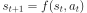
而可以是随机的：
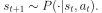
智能体的行为由策略确定。
你应该知道
行动轨迹常常也被称作 episodes 或者 rollouts。
奖励和回报¶
强化学习中，奖励函数 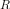 非常重要。它由当前状态、已经执行的行动和下一步的状态共同决定。
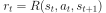
有时候这个公式会被改成只依赖当前的状态 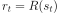，或者状态行动对  。
。
智能体的目标是最大化行动轨迹的累计奖励，这意味着很多事情。我们会把所有的情况表示为  ，至于具体表示什么，要么可以很清楚的从上下文看出来，要么并不重要。（因为相同的方程式适用于所有情况。）
，至于具体表示什么，要么可以很清楚的从上下文看出来，要么并不重要。（因为相同的方程式适用于所有情况。）
无衰减收益，指的是在一个固定窗口步数内获得的累计奖励：
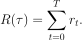
另一种叫做 衰减收益，指的是智能体获得的全部奖励之和，但是奖励会因为获得的时间不同而衰减。这个公式包含衰减率 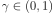:
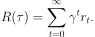
这里为什么要加上一个衰减率呢？为什么不直接把所有的奖励加在一起？可以从两个角度来解释： 直观上讲，现在的奖励比外来的奖励要好，所以未来的奖励会衰减；数学角度上，无限多个奖励的和很可能 不收敛 ，有了衰减率和适当的约束条件，数值才会收敛。
你应该知道
这两个公式看起来差距很大，事实上我们经常会混用。比如说，我们经常会用算法优化无衰减的回报，但是用衰减率估算 值函数。
强化学习问题¶
无论选择哪种方式衡量收益（无衰减收益或衰减收益），无论选择哪种策略，强化学习的目标都是选择一种策略从而最大化 预期收益。
讨论预期收益之前，我们先讨论下行动轨迹的可能性分布。
我们假设环境转换和策略都是随机的。这种情况下，  步 行动轨迹是：
步 行动轨迹是：
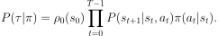
预期收益是 
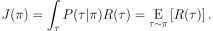
强化学习中的核心优化问题可以表示为：
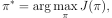
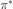 是 最优策略
值函数¶
知道一个状态的 值 或者状态行动对(state-action pair)很有用。这里的值指的是，如果你从某一个状态或者状态行动对开始，一直按照某个策略运行下去最终获得的期望回报。几乎是所有的强化学习方法，都在用不同的形式使用着值函数。
这里介绍四种主要函数：
- 同策略值函数 ： ，从某一个状态 开始，之后每一步行动都按照策略 执行
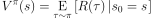
- 同策略值函数 ： ，从某一个状态
同策略行动-值函数 ： 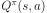,从某一个状态
开始，先随便执行一个行动 （有可能不是按照策略走的），之后每一步都按照固定的策略执行 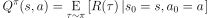
最优值函数： 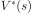，从某一个状态
开始，之后每一步都按照 最优策略 执行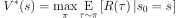
最优行动-值函数 ：
 ，从某一个状态 开始，先随便执行一个行动 （有可能不是按照策略走的），之后每一步都按照 最优策略 执行
，从某一个状态 开始，先随便执行一个行动 （有可能不是按照策略走的），之后每一步都按照 最优策略 执行 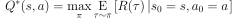
你应该知道
当我们讨论值函数的时候，如果我们没有提到时间依赖问题，那就意味着 折扣收益。 无衰减收益需要传入时间作为参数，你知道为什么吗？ 提示：时间到了会发生什么？
你应该知道
值函数和行动-值函数两者之间经常出现的联系：
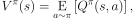
以及：
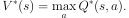
这些关系直接来自刚刚给出的定义，你能尝试证明吗？
最优Q函数和最优行动¶
最优行动-值函数 和被最优策略选中的行动有重要的联系。从定义上讲， 指的是从一个状态 开始，任意执行一个行动 ，然后一直按照最优策略执行下去所获得的回报。
最优策略 会选择从状态 开始选择能够最大化期望回报的行动。所以如果我们有了 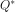 ，就可以通过下面的公式直接获得最优行动：  ：
：

注意：可能会有多个行为能够最大化 ，这种情况下，它们都是最优行为，最优策略可能会从中随机选择一个。但是总会存在一个最优策略每一步选择行为的时候是确定的。
贝尔曼方程¶
全部四个值函数都遵守自一致性的方程叫做 贝尔曼方程，贝尔曼方程的基本思想是：
起始点的值等于当前点预期值和下一个点的值之和。
同策略值函数的贝尔曼方程：
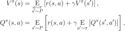
 是 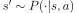 的简写, 表明下一个状态 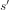 是按照转换规则从环境中抽样得到的;
是 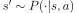 的简写, 表明下一个状态 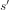 是按照转换规则从环境中抽样得到的;  是 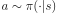 的简写; and
是 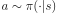 的简写; and  是 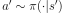 的简写.
是 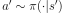 的简写.
最优值函数的贝尔曼方程是：
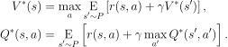
同策略值函数和最优值函数的贝尔曼方程最大的区别是是否在行动中去 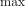 。这表明智能体在选择下一步行动时，为了做出最优行动，他必须选择能获得最大值的行动。
你应该知道
贝尔曼算子（Bellman backup）会在强化学习中经常出现。对于一个状态或一个状态行动对，贝尔曼算子是贝尔曼方程的右边： 奖励加上一个值。
优势函数（Advantage Functions）¶
强化学习中，有些时候我们不需要描述一个行动的绝对好坏，而只需要知道它相对于平均水平的优势。也就是说，我们只想知道一个行动的相对 优势 。这就是优势函数的概念。
一个服从策略 的优势函数，描述的是它在状态 下采取行为 比随机选择一个行为好多少（假设之后一直服从策略 ）。数学角度上，优势函数的定义为：
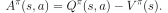
你应该知道
我们之后会继续谈论优势函数，它对于策略梯度方法非常重要。
 是所有有效状态的集合,
是所有有效状态的集合, 是所有有效动作的集合,
是所有有效动作的集合, ,
,